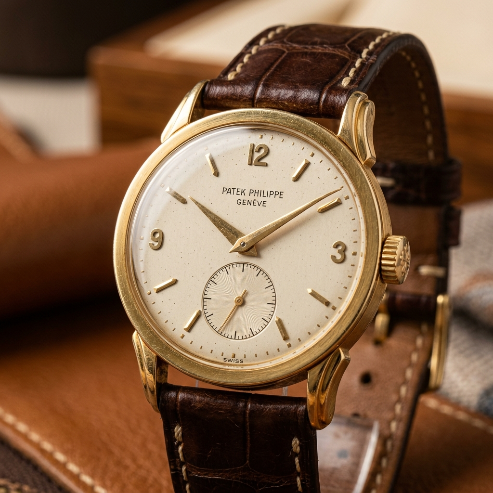
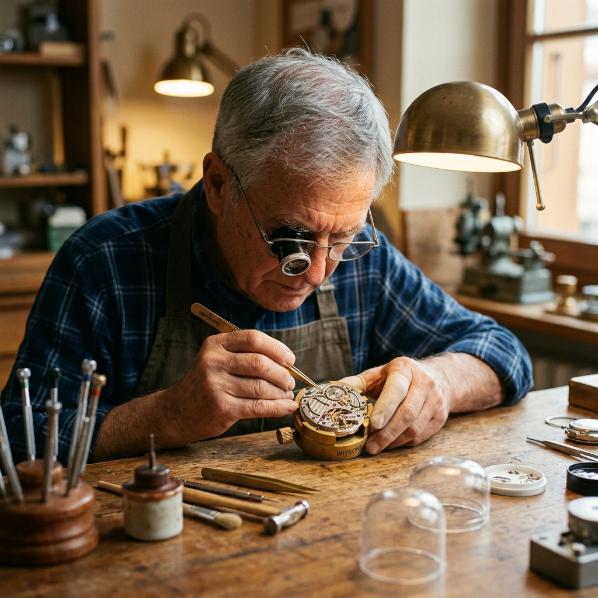

Dedicated to the meticulous restoration of luxury horological complications. We preserve the heartbeat of iconic timepieces for generations.

We specialze in the restoration of rare mechanical watches, where every microscopic component is treated with the reverence of a masterpiece.
Sourcing authentic parts from Swiss archives.
Fine oils tailored for each high-beat caliber.
Pressure testing to original factory specs.
Regulation within -4/+6 seconds per day.

The meticulous path to horological perfection.
Each piece tells a story — icons of craftsmanship revived.
Perpetual calendar complication service.
✨ Grand ComplicationVintage 5513 restoration with period-correct parts.
🌊 ExplorerCaliber 321 overhaul & dial preservation.
🚀 MoonwatchAuthentic stories from passionate collectors
"The icon-driven process gave me total confidence. My 1920s mantel clock ticks perfectly."
"Masterful restoration — they even recreated a missing gear using traditional techniques."
"Shipping was seamless and the communication via icons made tracking easy."
Book a free consultation — icon-based diagnostics & transparent restoration plan.